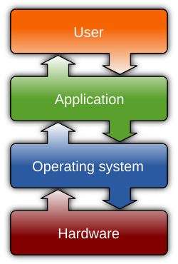

flowchart LR
A(Sistema Operativo) --> B(Kernel)
A --> C(File System)
A --> D(Interfaccia Utente: GUI/CLI)
B --> E(Gestione CPU, Memoria, Periferiche)
C --> F(File e Cartelle)
D --> G(Interazione con l'utente)
A --> H(Differenti OS: Windows, Linux, macOS)
Architettura di un Sistema Operativo
In questo file scopriremo che cos’è un sistema operativo, come è organizzato (kernel, file system e interfacce) e quali sono i principali OS utilizzati oggi. Il tutto con un tocco di leggerezza per mantenere la lettura piacevole.
1. Definizione e ruolo di un Sistema Operativo
Un Sistema Operativo (SO) è un insieme di programmi che gestisce l’hardware e coordina l’esecuzione del software. Possiamo paragonarlo a un direttore d’orchestra:
- Coordina l’uso della CPU tra i vari programmi.
- Assegna memoria ai programmi che devono essere eseguiti.
- Organizza i file sul disco, come se fossero libri in una libreria.
- Comunica con l’utente attraverso interfacce grafiche o testuali.
Senza un sistema operativo, il computer sarebbe un insieme di componenti hardware incapaci di dialogare tra loro in maniera utile.
2. Kernel, File System, Interfacce
2.1 Kernel
Il kernel è il cuore del sistema operativo e si occupa di:
- CPU: stabilisce quale programma può usare il processore e in che momento.
- Memoria: gestisce e assegna la RAM ai vari processi in modo che non si sovrappongano.
- Periferiche: fornisce le istruzioni per far comunicare i programmi con mouse, tastiera, stampante, scheda video e altre componenti.
- Sicurezza di base: separa lo spazio dell’utente da quello di sistema, impedendo ai programmi di effettuare operazioni non autorizzate.
2.2 File System
Il file system è la struttura con cui il sistema operativo organizza i dati su un disco (o su altre memorie di massa).
- Cartelle (directory): come scaffali di una libreria dove sono riposti i vari “libri”.
- File: singoli documenti, programmi o qualsiasi contenuto memorizzato.
- Permessi: regole che stabiliscono chi può leggere, modificare o eseguire un file.
- Esempi: NTFS (Windows), ext4 (Linux), APFS (macOS).
2.3 Interfacce Utente (GUI e CLI)
- GUI (Graphical User Interface): l’utente interagisce con finestre, icone e pulsanti usando principalmente il mouse (Windows Explorer, macOS Finder, desktop environment in Linux).
- CLI (Command Line Interface): un terminale testuale in cui si digitano comandi (Prompt dei comandi/PowerShell in Windows, shell Bash o Zsh in Linux/macOS).

Figura 1: Il Sistema Operativo tra hardware e software (fonte: Wikimedia Commons)
3. Caratteristiche Generali dei Principali Sistemi Operativi
3.1 Microsoft Windows
- Licenza: Proprietaria (Microsoft).
- Interfaccia: GUI con un file explorer (Esplora File) e desktop a icone.
- Punti di forza: Ampio supporto software e hardware; molto diffuso in ambito domestico e aziendale.
- Considerazioni: A pagamento, spesso preinstallato sui PC acquistati in negozio.
3.2 GNU/Linux
- Licenza: Open Source.
- Interfaccia: Generalmente GUI (GNOME, KDE, ecc.) e un terminale potente.
- Punti di forza: Gratuito, flessibile, sicuro, con grandi community di supporto.
- Considerazioni: Disponibile in numerose distribuzioni (Ubuntu, Debian, Fedora, ecc.).
3.3 macOS (Apple)
- Licenza: Proprietaria (Apple).
- Interfaccia: GUI curata (Finder, Dock), con terminale Unix-like disponibile.
- Punti di forza: Integrazione hardware-software, stabilità, design elegante.
- Considerazioni: Funziona ufficialmente solo su computer Apple.
4. Differenze Principali (Tabella Riassuntiva)
| Caratteristica | Windows | GNU/Linux | macOS |
|---|---|---|---|
| Licenza | Proprietaria | Open Source | Proprietaria (Apple) |
| Interfaccia Principale | Grafica (GUI) | Grafica + Terminale | Grafica (GUI) |
| Costo | A pagamento* | Gratuito (varie distro) | Incluso nell’acquisto Mac |
| Flessibilità | Medio-alta | Molto alta (personalizz.) | Bassa (chiuso) |
| Ambiti d’uso | PC domestici, uffici, gaming | Server, desktop, IoT | Computer Apple (creativi, professionisti) |
* Spesso Windows è preinstallato, ma la licenza è comunque a pagamento e inclusa nel prezzo.
5. Conclusione
Abbiamo esplorato il kernel (che gestisce CPU, memoria, periferiche), il file system (che organizza i dati in file e cartelle) e le interfacce utente (GUI e CLI).
Abbiamo anche dato uno sguardo alle differenze principali tra Windows, GNU/Linux e macOS, cercando di fornire un quadro generale su quali siano le peculiarità e i contesti d’uso di ciascuno.